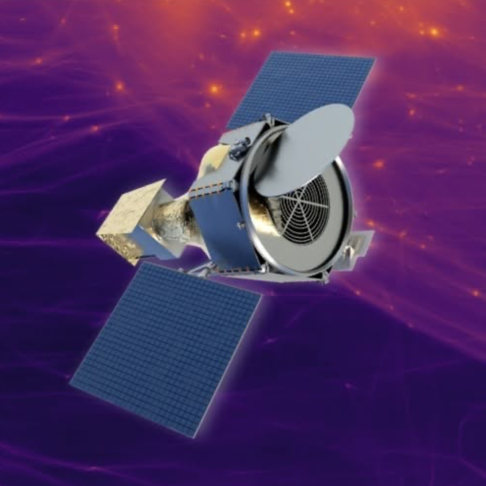

We are actively involved in shaping the next generation of observatories for high-energy astrophysics. Our group contributes to the development and scientific planning of future X-ray missions, including Lynx 2030, the probe- and explorer-class concepts LEM (Line Emission Mapper) and ExCEED, and the ESA/NASA large mission NewAthena, currently planned for launch in 2037. We are also involved in OLIMPO, a high-altitude stratospheric balloon experiment designed for thermal and kinetic Sunyaev-Zeldovich observations of galaxy clusters.
A major part of our work is to define the key science questions that drive the design of future detectors, mirrors, and observatories. We place particular emphasis on X-ray microcalorimeter technology, which combines high spectral resolution with imaging and makes it possible to obtain detailed spectra across extended sources like galaxy clusters, supernova remnants, and galactic environments. By connecting ambitious science goals with new instrumentation, we help develop the capabilities that will define X-ray astronomy in the coming decades.
Selected relevant publications:
Lynx2030 Science Analysis Group. Lynx2030 Science Analysis Group: Final Report. arXiv:2609.00033 (2026).
Zhang C., Zhuravleva I., Markevitch M., et al. Mapping the intracluster medium in the era of high-resolution X-ray spectroscopy. MNRAS, 530, 4234 (2024) .
Kraft R., Markevitch M., Kilbourne C., et al. Line Emission Mapper (LEM): Probing the physics of cosmic ecosystems. arXiv:2211.09827 (2022).
Zhuravleva I., Churazov E., Sunyaev R., et al. Resonant scattering in the Perseus Cluster: spectral model for constraining gas motions with Astro-H. MNRAS, 435, 3111 (2013).
Image credit: Lynx mission team
